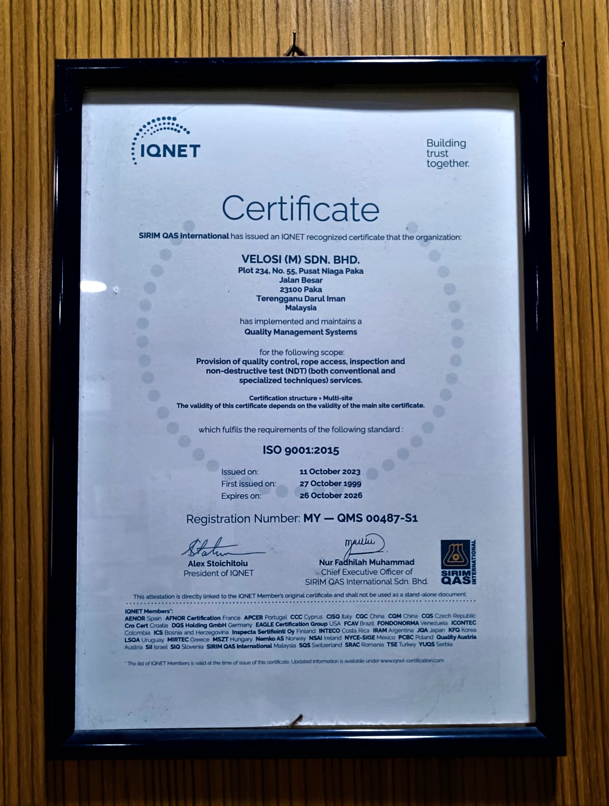

Our Vision
To become the world’s premier Asset Integrity, HSE & Engineering Consultancy
Our Mission
To create value for our clients by providing tailored Asset Integrity, HSE and Engineering Solutions to complex problems through a renowned panel of engineering professionals
About Us
Velosi has more than 41+ years of experience helping clients by providing a one-stop center for complete Asset Integrity Management, HSE and Engineering Services to leading oil and gas companies worldwide. We operate globally through our associated offices in Middle-East, Africa and Asia.
Velosi can offer you a complete asset integrity management and software solution.
The strength of our approach comes from offering a multiregional service while meeting local needs. Velosi achieves this because we operate in selected world’s major established and emerging markets. From your local offices, you will be able to easily access our network to receive the service that you need.
This approach provides a solution to companies who are trying to control operations in unfamiliar territories remotely. By cutting through barriers, we provide companies with the highest levels of commitment and personalized services.
Velosi has developed a comprehensive Asset Integrity Management software; VAIL-Plant, that can be tailored to fulfill the specific needs of Energy companies worldwide.
Velosi Certificate

×